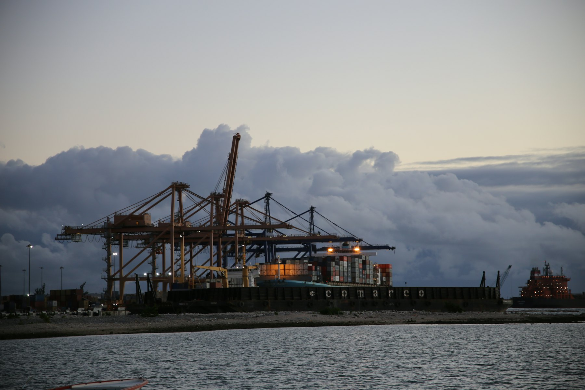
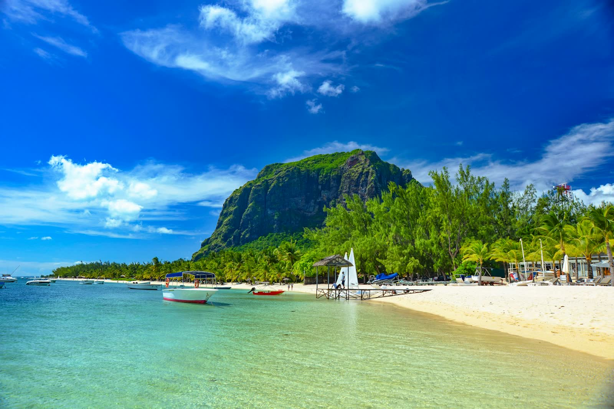
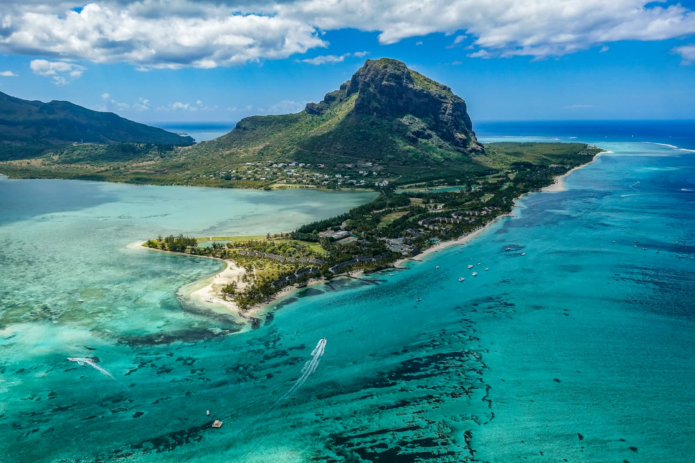

World Heritage · 2006Port Louis
Aapravasi Ghat
The immigration depot where the indentured labour system began, the first site of its kind in the world.

From a volcano rising out of the ocean to a nation built by people from four continents. This is the story behind the postcard.
Volcanic eruptions on the ocean floor build the island roughly eight million years ago. A coral reef slowly grows around it.
Arab and Portuguese navigators know of the island, but it stays uninhabited, home only to birds, bats and giant tortoises.
Dutch sailors land and name the island after Prince Maurice of Nassau. They later bring sugar cane and deer.
The French claim the island and develop Port Louis into a busy harbour. French language and culture take deep root.
Britain takes control during the Napoleonic Wars, but French laws, language and customs largely stay.
Slavery is abolished. The Le Morne mountain remains a powerful symbol of resistance and freedom.
Around half a million indentured labourers, mostly from India, arrive through Aapravasi Ghat in Port Louis.
On 12 March, Mauritius becomes an independent nation and raises its four-band flag for the first time.
Mauritius becomes a republic within the Commonwealth, again on 12 March, now celebrated as National Day.
Two World Heritage sites, plus living traditions on UNESCO's intangible heritage lists.

World Heritage · 2006The immigration depot where the indentured labour system began, the first site of its kind in the world.

World Heritage · 2008A mountain that sheltered escaped slaves, now a symbol of the fight for freedom and human dignity.
Born among enslaved communities, sega mixes song, drum and dance, led by the ravanne frame drum.
Bhojpuri wedding songs and rituals carried from India, sung by women before a wedding.
A large, flightless pigeon relative found only on Mauritius. It had no natural predators until humans and the animals they brought arrived. Within decades it was gone, and it became the world's best-known symbol of extinction. Today it's on the coat of arms, on souvenirs and in every Mauritian's heart.
The dodo taught a hard lesson. Decades of conservation work have since rescued some of the rarest birds on Earth.
Once down to just four known wild birds in the 1970s, making it one of the rarest birds in the world. Captive breeding brought it back.
Reduced to a tiny wild population, the pink pigeon has been brought back through breeding and release programmes in the forests.
Once one of the world's rarest parrots, with only a handful left, the echo parakeet now flies again in the Black River Gorges.
Bar charts are illustrative of recovery trends, not exact counts.
In 1847 Mauritius became the first British colony to issue its own postage stamps. Only a few of the original orange-red one penny and deep blue two pence stamps survive, and they rank among the rarest and most valuable stamps on Earth.
Illustrations are stylised, not reproductions of the originals.
Hindu, Muslim, Christian, Chinese and Creole traditions share the calendar, and everyone joins in.
Red lanterns, firecrackers and sweet wax cakes welcome the lunar new year.
Pilgrims walk to the sacred lake of Grand Bassin carrying decorated kanwars.
Independence and republic day, with flags, music and parades across the island.
A Tamil festival of devotion, with colourful processions to the temples.
The end of Ramadan, celebrated with prayers, family visits and shared meals.
The festival of lights, when houses glow with oil lamps and sweets are shared with neighbours.